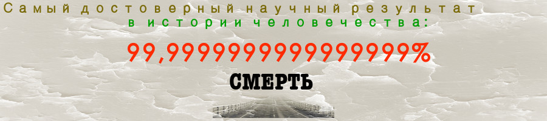

Практика эпистемологии
Ruslim.Org — это практическое руководство по эпистемологии/невежеству. Мы изучаем количественные аспекты того, что мы знаем и как, применяя их к реальным жизненным ситуациям, для облагораживания изучающих и общества (читать далее).
Не знаешь, где начать? Начни со смерти –> Исход жизни –> Эмпирический тест парадокса жизни без цели –> прочитай Исповедь Л. Н. Толстого
Практическое руководство "Смерть и жизнь":
(1,2,… – утверждения; I,II,… – выводы; см. также ссылки)
- 1: Разумная деятельность имеет цель/желание, обоснование деятельности
- 2: Цель разумной деятельности лежит за ее концом
- 3: Смерть – неизбежный конец жизни
- I: –1 + 2 + 3–> Результат жизни – после смерти
- 4: Все, что выходит за пределы жизни, относится к вере
- II: –I + 4–> Цель всей (разумной) жизни относится к вере
- III: –I + II–> Цель жизни без веры невозможна. Жизнь без цели неразумна. Следовательно, жизнь без веры также неразумна.
Читайте также: Как читать | Кто мы? | Этимология Ruslim
Избранное
Исповедь, Л. Н. Толстой
Если Лев Толстой самый великий русский писатель, то его "Исповедь" самое великое русское произведение. Хотя и написано оно в очень автобиографичном стиле, по важности решаемого вопроса, "вопроса жизни", и плотности смысловой нагрузки, оно далеко превосходит традиционно популярные "Анна Каренина" и "Война и мир". Логичность изложения и обоснованность причинно-следственных переходов, обычно не свойственные писателям художественного жанра, с неизбежностью бросаются в глаза читателю произведения.
Именно такого подхода заслуживает вопрос, первостепенно требующий решения. Возможно, кто-то проигнорирует его или не согласится с самой постановкой вопроса (такие люди также описаны Толстым в произведении), но надеюсь, что каждый понимает, что жизнь — это самое важное, что у нас есть, а значит она требует самого тщательного к себе подхода.
Разнообразная активность, свойственная разным людям, может иметь ту или иную важность, но жизнь является необходимым условием к действию. Она предпосылает все остальное. Она также обладает одним неотъемлемым свойством — она заканчивается, и ее венцом служит смерть, которая неизбежно разрушает ту жизнь, с которой каждый из нас так хорошо знаком.
Если смерть есть неизбежный исход любой жизни, каков результат жизни индивидуума, который бы не уничтожался смертью? Что выходит из моей жизни такого, чтобы не разрушалось абсолютно смертью?
Таковы формулировки вопроса жизни. Толстой разделяет четыре категории людей в зависимости от типа ответа, который они дают на вышепоставленный вопрос. Все четыре типа ответа являются отрицательными и характерными для класса людей из окружения самого Л. Н. Толстого (переводя на сегодняшний язык, это академический персонал, профессора и учителя, политики, экономисты, юристы и прочие люди с высшим образованием).
Первые игнорируют вопрос напрочь, даже не понимая его. Автор называет их откровенно "тупыми" людьми, которые не находят в своей жизни времени для главного размышления.
Вторые признают вопрос и его формулировки и, утверждая, что у жизни нет смысла, выходящего за рамки между рождением и смертью, прожигают свою жизнь в удовольствиях и потехах. Их негативный ответ приводит их к выводу, что необходимо насладиться как можно большим количеством удовольствий и утех, так как толку от всего в итоге все равно не будет. Удовольствия вторых не всегда очевидны. Иногда, они признают вопрос, но живут обычной, даже правильной жизнью далекой от кутежа, разбоя, насилия, безделия. Они признают для себя важным наличие, к примеру, здорового питания, здорового тела и умного окружения. Их жизнь кажется дисциплинированной в определенных вопросах. Они ограничивают себя в чем-то в угоду того, что они называют "идеалами". Это именно вторая группа. Они лишь перераспределяют приоритеты с одних вещей на другие, и эти последние для них являются удовольствием, приносящим удовлетворение на глубоком эмоциональном и психическом уровнях. Удовлетворение, которое я получаю от здорового тела, больше такового, полученного от съеденной вкусной, но абсолютно нездоровой пищи. Сам факт того, что их забота о правильности и здоровье призвана лишь продлить им эту жизнь, говорит о том, что это лишь другая форма получения удовольствия.
Вторая группа обширна. Сюда можно включить и тех, кто сознательно не признает постановки вопроса, то есть такие люди, которые утверждают, что сам вопрос в наших условиях не может быть поставлен, что он не характерен для жизни вообще. Такие люди также чаще всего полагают, что жизнь произошла и развивается по случайным законам, не удосуживаясь определить понятие случайности и не задумываясь о том, что выражение "случайный закон" может быть абсурдным. Такие люди не видят смысла рациональности и логической завершенности чего-либо в нашей жизни, а если и видят смысл, то только в отдельных аспектах жизни (хочу поесть — куплю хлеба, хочу профессию — иду учиться). Критерии выбора этих аспектов неясны. Интересно узнать, почему сама жизнь не подпадает под эти критерии.
Странным образом, в эту категории попадают люди, склонные к чрезвычайной рациональности и педантичности (своего рода Базаровы), которые при этом не утруждают себя применить логику к жизни самой, во всей ее целостности. Также кажется удивительным то, что в жизни этих людей (как и любых других) существуют вещи и поступки, которые никогда не поддаются логике, за исключением лжеоправданий вроде "я хочу" и "мне так приятно".
Третьи признают вопрос, и его актуальность приводит их к самоубийству. Они также негативно отвечают на него, но не могут с этим жить, в отличие от второй группы. Этот вопрос для них кажется слишком серьезным, чтобы забываться в наслаждениях. Логичность решения третьих, в свете их убежденности, что после смерти наступает абсолютный конец, не вызывает сомнения. Они лишь не хотят продолжать то, что не имеет смысла. Они не желают работать и созидать в угоду тому, что рано или поздно все равно закончится. Эти люди мыслят широко. Рациональность людского существования, которую они требуют во всех его аспектах, заставляет их рационально взглянуть на вопрос жизни и, следуя рациональности, ответить на него.
Четвертая и последняя группа по Толстому признает вопрос, его актуальность, но, при негативном их ответе на вопрос, страх покончить эту забаву под названием "жизнь" побеждает позыв разума закончить игру, не имеющую смысла. Автор относит себя самого к этой группе. Страх покончить жизнь самоубийством настолько силен, что он даже оставляет ружье дома, когда выходит на охоту, боясь последовать позыву разума.
Смысл всей жизни и ее частей
(Нижеприведенный отрывок является промежуточным развитием идеи смысла жизни и ее результата (исхода), как они объяснены в статье Исход жизни. В свете того исторически последнего и более развитого материала смысл жизни в узком смысле здесь приравнивается смыслу жизни там, а смысл жизни в широком смысле в этой статье приравнивается к исходу (результату) жизни в другой статье.)
Мы должны осознавать, что смысл чего-либо, то есть результат любой активности, любого процесса, любой деятельности всегда познается в полной мере лишь по завершении того, на результат чего мы смотрим.
Я учусь, чтобы получить диплом и надежную работу. Во время учебы я осознаю вполне результат этой деятельности, наблюдая за другими выпускниками и за старшими, но всеобъемлюще я познаю результат лишь при фактическом завершении учебы и удачной сдаче выпускных экзаменов. Сам процесс обучения без его формального завершения не может удовлетворить ожидания обучающегося, желающего именно закончить обучение формально (например, пришедший получить только знания не очень будет заботиться о дипломе).
Я иду в магазин купить хлеба. Процесс ходьбы не может принести удовлетворения желания, вызванного потребностью в хлебе. Нужно именно дойти до магазина и купить хлеб.
Некоторые авторы (особенно из экзистенционального направления философии) пытались разрешить вопрос жизни, подменяя смысл жизни во всей ее целостности, смыслами отдельных людей и их жизней. Их ответ был таков: у жизни как таковой нет смысла, но каждый индивидуум находит свой смысл в своей отдельной жизни. Смысл жизни как ее результат не может быть подменен более мелкими смыслами. Здесь имеется филологическая уловка. Одно определение смысла подменяется с легкостью другим (иногда в пределах одного параграфа) и создается впечатление решенности проблемы, так как за одинаковостью названий скрывается серьезная логическая ошибка.
Тщетность подмены большого смысла более мелким хорошо показана концом жизни главного героя романа Дж. Лондона "Мартин Иден". Найдя в себе огромное стремление писать и учиться настолько, чтобы забросить всякие попытки к реальному заработку и попасть в огромные долги, одноименный герой этого произведения пишет рассказы, повести и даже философские заметки. И вот, когда уже нищета достигает критической точки и физических сил писать больше нет, ему понемногу начинают приходить положительные ответы из редакций журналов, что приводит к серьезному обогащению. Новоиспеченная звезда художественного мира кончает жизни самоубийством, поняв, что все, чем он жил, закончилось, так как его мечта (мелкий смысл) сбылась.
Толстой подразумевает наибольший охват термина "смысл жизни", то есть такой ее результат, который, как показано ранее, познается только в конце (после смерти). Так как любой более мелкий смысл заканчивается с достижением желаемого, то он не может служить смыслом всей жизни. И не важно достигнут ли результат человеком или нет.
Цель моей жизни (ее смысл) — завоевать золотую медаль на Олимпийских играх. Во-первых, если я все-таки получу долгожданную медаль, цель достигнута, у жизни больше цели нет. Зачем тогда жить? Если, с достижением результата, поставить новую цель, то тогда предыдущая цель не являлась целью собственно жизни. Если в упорных трудах, перемежающихся со сладкими грезами о желанной победе, результат не достигнут, то и тогда цель не является целью жизни, так как теоретически этот результат достижим (мы именно поэтому и ставим промежуточные цели в нашей жизни, так как понимаем, на примере других, что они могут быть достижимы). Как бы то ни было, данная цель является одной из многих целей в жизни, но не самой жизни.
Важно помнить, что как здесь, так и в произведении "Исповедь" речь ведется о смысле жизни, а не различных смыслах, ограниченных этой жизнью, существующих в ней. Именно так определив понятие смысла жизни, мы можем избежать подмены, осуществляемой некоторыми философами: за одним и тем же термином скрывается несколько определений.
Интересно, что мы также оставляем в стороне вопрос об универсальности смысла жизни (то есть единый ли он для всех людей), в этом рассуждении мы можем допустить наличие личных, индивидуальных смыслов для каждого. Однако мы не можем признать то, что смысл, ограниченной этой жизнью, может называться "смыслом жизни" в истинном понимании.
В заключение хотелось бы заметить, что произведение чрезвычайно обширно по спектру затрагиваемых вопросов, и единственным советом может быть лишь активное чтение труда, которое подразумевает наличие согласия с автором в определениях и терминах, которые мы частично попытались раскрыть здесь.
Истинный закон жизни так прост, ясен и понятен, что людям нельзя оправдывать свою дурную жизнь тем, что они не знают закона. Если люди живут противно закону истинной жизни, им остается одно: отрекаться от разума. Они это и делают (Л. Н. Толстой. Путь Жизни).
См. также:
Исход жизни | Смерть
Исход жизни
1. Смысл и цель жизни
Смысл жизни — это то значение и важность, которые придает человек своей жизни и которые влияют на то, как тот или иной человек проживает свою жизнь для достижения того, что по его меркам называется счастливой жизнью. В самом деле, каждый сам определяет то, что будет наполнять его жизнь смыслом. Подобный смысл вытекает из системы ценностей каждого отдельного индивидуума и может иметь отношение к его эмпирически не доказуемым убеждениям. Например, мой смысл жизни заключается в том, чтобы учить детей, лечить больных людей, стать лучшим из хирургов, заработать денег для помощи нуждающимся, стать президентом.
Цель (всей) жизни — это результат, которого стремится достичь человек, проживая свою жизнь и достигая чего-то. Этот результат обосновывает человеческую жизнь, объясняет, зачем и для чего человек живет, что он пытается достичь на исходе всей жизни, чего он желает.
Вывод 1: согласно этим определениям, смысл жизни имеет отношение к процессу, способу и механизму (как?), посредством которых мы проживаем нашу жизнь, тогда как цель, или исход, жизни имеет отношение к ее результату.
Следствие 1: цель, преследуемая в жизни, может создавать в жизни смысл. Аналогично цель всей жизни может создавать смысл для всей жизни.
Замечание 1: цель здесь определяется очень широко: это и желание, и стремление, и томление по какому-нибудь исходу, ожидаемому как результат той или иной деятельности. Цель не понимается узко, как в случае конкретных шаблонных использований этого слова, как то: карьерные цели, образовательные, интеллектуальные, оздоровительные и т.д. Смысл жизни же понимается здесь в узком смысле, то есть смысл, ограниченный этой жизнью. На данном этапе мы не вдаемся в детали смысла всей жизни, так как он связан с целью жизни и требует дополнительного анализа, оставленного на будущее. Семантически слово "смысл" имеет множество значений, не исключая даже само понятие "цели". Именно поэтому мы ограничиваем смысл этих определений в данном контексте.
2. Важность цели
Цель любой деятельности является наиважнейшей для этой деятельности, так как она мотивирует любое разумное существо, такое как человек. Для каждой деятельности разум определяет, почему он делает и чего он пытается достичь. И это будет причиной той или иной деятельности.
Почему я хожу в университет? Я хочу получить диплом. Если ты не получишь диплома, миссия провалится. Идея получения диплома поддерживает твой энтузиазм к достижению цели.
Почему я хожу в университет? Я хочу стать смышленее. Если ты не получишь диплома, миссия все еще продолжается и может быть успешна, потому что ты хочешь в конечном счете стать умнее (несмотря на критерии количественной оценки ума).
Зачем вы идете за покупками? Я хочу купить хлеба на обед. Если вы купите новую пару туфлей, миссия провалится, потому что целью было приобрести некоторое количество хлеба [1].
Вывод 2: дела делаются и оправдываются/обосновываются их желаемым результатом. Результат ожидается в конце каждого дела.
Следствие 2: любое дело заканчивается с достижением или невозможностью достижения его конкретной цели (возможно, поэтому лингвистически "исход" приравнивается к "результату" и "цели", так как означает буквально выход или конец чего-либо).
Замечание 2: выход на улицу подышать свежим воздухом из-за "простого безделья" не может являться по сути без цели, так как "подышать свежим воздухом" и есть результат, искомый в данном действии, то есть его цель. Простое безделье (не как цель сама по себе, но как бессмысленный, нецелесообразный процесс) может быть результатом, искомым в действии, только на неразумных основаниях и возможно как таковое для душевнобольных. То же с простой любовью к делу, как рисование, резьба по дереву, игра в футбол — для каждой такой деятельности будет результат, или желание, стремлением к которому деятельность обосновывается, каким бы личным и бессмысленным этот результат ни был на большем масштабе. И это справедливо для целого сонма других "инстинктивных" дел, мысль о цели которых не обязательно существует постоянно, в каждый отдельный момент в голове человека, но которые все равно оправдываются рационально некой целью. Важно понимать здесь, что цель не только подразумевается в детально аргументированной деятельности (как, например, цель проекта, цель получения образования и т.д.), но и в деятельности, происходящей скорее на подсознательном уровне. В последенм случае мы назовем целью даже эмоциональный порыв, внутреннее чутье, инстинкт, внутреннюю предрасположенность и простое желание. И это возможно лишь потому, что способ оправдания любой деятельности зависит от рациональной зрелость человека, выполняющего действие. В экспериментах было показано, что человек склонен оправдывать действия и называть их причины, даже если эти действия были простимулированы извне, например, учеными в лаборатории (некто вызывает поднятие руки стимуляцией соответствующего отдела мозга, а подопытный пост-фактум объясняет зачем он поднял руку). Таким образом, мы оправдываем наши дела даже когда они и не наши вовсе.
3. Исход жизни
Цели всей жизни лежит безусловно за ее концом, смертью. Достиг ли человек своей жизненной цели или нет, не может быть ясно до наступления смерти, то есть в течение жизни. Следовательно то, что иногда называется целью жизни, не может рассматриваться как таковая, если она в принципе достижима в течение жизни человека.
Цель стать президентом не может служить целью всей вашей жизни, так как, если вы станете президентом, цель будет достигнута, а вы все еще живы и ваша жизнь осталась без той конкретной цели, которую вы называли целью всей вашей жизни. Следовательно, это не может быть целью всей вашей жизни.
Вывод 3: результат (достижение или недостижение цели) жизни выходит за границы самой жизни, по крайней мере находится у ее конца, смерти.
Следствие 3: заметьте, что цель вашей жизни заметно влияет на то, как вы проживаете вашу жизнь, то есть смысл вашей жизни. Однако, смысл жизни влияет на то, что вы получите как результат своей жизни, лишь и только посредством веры. Другими словами, то, что вы рассматриваете как цель всей вашей жизни, будет ощутимо изменять вашу жизнь. Но человек может лишь верить, что то, как он проживает свою жизнь, изменит окончательный результат, исход жизни (после смерти).
Замечание 3: ваша жизнь может иметь цели поменьше, которые, возможно, имеют отношение к смыслу жизни и которые легко достижимы в течение жизни. Однако они не могут быть целями всей вашей жизни…
4. Исход жизни и вера
-
Разумное существо обосновывает любую свою деятельность целью и результатом, к которым он стремится посредством данной деятельности.
-
Результат жизни находится за пределами жизни.
-
Все, что находится за жизнью и ее опытом, принадлежит области убеждений и верований, так как отсутствуют эмпирические доказательства чего-либо после смерти.
Вывод 4: разумное существо с необходимостью обязано иметь веру относительно целей, которые может иметь жизнь.
Следствие 4: эмпирическое доказательство может требовать наличия веры.
Замечание 4: Лев Толстой в Исповеди [2] приходит к тому же самому выводу, кратко выраженному следующими вопросами, "вопросами жизни", "самыми простыми вопросами, лежащими в душе каждого человека", "вопросами, без которых жизнь невозможна":
Что выйдет из того, что я делаю нынче, что буду делать завтра, — что выйдет из всей моей жизни? Зачем мне жить, зачем чего-нибудь желать, зачем что-нибудь делать? Есть ли в моей жизни такой смысл, который не уничтожался бы неизбежно предстоящей мне смертью?
[1] Заметьте тонкую разницу в вопросах "Почему?" и "Зачем?" Первый указывает на причину действия (исторически предшествующую действию), второй — на конечный результат (после окончания действия). Но иногда разница не уловима и причиной становится конечный результат действия, оправдывающий ("причиняющий" или "вызывающий") действие. Почему мы идем на рынок? — Чтобы (следствие, результат) купить хлеба (ср.: Потому что мы голодны).
Еще одна техническая проблема с этими вопросами возникает в языке. Мы иногда можем оправдывать свое действие причиной, однако причина никогда не может служить результатом, который достигается действием. Почему мы идем на рынок за хлебом? — Потому что у нас нечего есть. В действительности же мы идем за хлебом, *купить его и съесть. Однако последнее недвусмысленно понимается из причины (голод). Зачем ты хочешь наказать его? — Потому что он обанкротил меня. Причина (вызванное банкротство) неявно подразумевает желание мести как результат действия-возмездия.
[2] Эта работа особенно важна, так как она резюмирует человеческое знание по данному предмету (возможно, с акцентом на Западно-Христианской мысли и довольно значительным экскурсом в Восточную традицию). Толстой не рассуждает умозрительно, потому что для него этот вопрос в действительности стал вопросом жизни или смерти. Как, впрочем, ему и полагается…
Парадокс жизни без цели: эмпирический тест
Если имеется результат, искомый в процессе жизни и являющийся абсолютным конечным ее итогом, то он становится ясным за рамками жизни от рождения до смерти (точнее, после жизни, то есть смерти; см. подробнее Исход жизни). Более того, разумная деятельность, такая как жизнь, обязана иметь такую цель, определяемую необходимо через веру (Важность цели и Исход жизни и вера) [1].
Что же позволяет жить тем людям, которые полагают, что цели у жизни нет? Что если жизнь, как уникальная деятельность, заслуживающая не менее уникального подхода, не имеет целей, как любая другая разумная деятельность? Что если, наконец, эта наша привычка оправдывать всякую деятельность причиной и целью не распространяется на саму жизнь? (см. Замечание: "отсутствие" разумной цели и привычка/инстинкт)
Толстой выделяет четыре категории людей (см. Исповедь), отвечающих отрицательно на вопрос жизни.
- Глупцы, которые даже не понимают вопроса жизни и, конечно, не рассматривают его вовсе.
- Эпикурейцы, люди, которые признают бессмысленность жизни и стремятся получить как можно больше удовольствий от нее.
- Третьи (слабые) признают бессмысленность жизни, но боятся закончить жизнь как бессмысленное занятие, не присущее разумному существу.
- Четвертые (сильные) признают вопрос жизни и прекращают жизнь.
Итак, четыре категории решают вопрос жизни с помощью глупости, эпикурейства, слабости или силы, соответственно. Очевидно, что решение слабости и силы правильны с нашей позиции исхода жизни, если не верить, что жизнь имеет цель после смерти (отрицательный ответ на вопрос жизни). Отличия этих двух решений кроются не в интеллектуальной сознательности, но в практической последовательности. Очевидно также, что глупость вообще не является решением, но является лишь игнорированием проблемы. Таким образом, внимания заслуживает решение вопроса, предлагаемое эпикуреизмом.
Эпикуреизм, отрицая цель всей жизни, продолжает жить (да еще и "довольствоваться" жизнью). Будучи разумными в любых других областях и делах, эпикурейцы не считают, что жизнь, как и любая другая активная деятельность, должна иметь результат, искомый в ней разумным индивидуумом.
Эпикуреизм может быть истинным, когда адепт действительно старается во всякой своей деятельности заполучить наибольшее удовольствие. В таком случае наслаждение является целью любой отдельной активности в жизни эпикурейца и не может быть целью всей его жизни, как было показано ранее (Исход жизни). А если целью всей жизни является получение как можно большего удовольствия, то результат таким образом прожитой жизни должен быть обязательно понят после смерти и посредством веры (Исход жизни и вера). Следовательно, истинный эпикуреец либо верит в то, что наслаждение есть цель всей его жизни, либо является глупцом, не имеющим ничего в качестве цели жизни. В первом случае он решает вопрос утвердительно и не является предметом рассмотрения данного очерка. Во втором же случае он переходит в первую категорию, то есть категорию глупцов, не сознающих вопроса жизни.
Ложный эпикуреизм (а он охватывает, скорее всего, большую часть простого люда нынче) заключается в том, что люди живут как обычно, как все: ходят в школу, получают профессию, добиваются великих карьерных и семейных целей, имеют хобби, страдают иногда, трудятся в поте лица, рожают детей, гуляют и веселятся, а также делают все, что им нравится, а что они не любят или не понимают — то они игнорируют в силу своих возможностей, также позволяя другим делать то, что тем хочется. Одним словом, они пытаются достичь того, что по их меркам является счастливой жизнью, как видится именно им или их кумирам (тем, с кого они перенимают ролевую модель). В их жизни удовольствия идут рука об руку со страданием и дискомфортом от трудностей достижения жизненных целей. Они даже наслаждаются трудностями. Таким образом, они подменяют понятие цели жизни понятием смысла жизни, как их определяем мы (см. Цель и смысл жизни). Они не имеют цели жизни или не хотят (серьезно) думать о ней — глупцы по вышеприведенной классификации.
Парадокс отсутствия цели жизни: эмпирический тест
В силу каких-то странных убеждений (странность которых сама по себе делает их аргумент неразумным) некоторые полагают, что либо жизнь, будучи предметом столь уникальным, не обладает своим собственным всеобъемлющим результатом (интеллигентный нигилизм), либо никакая деятельность вообще (и следовательно, жизнь тоже) не обязана иметь результат, обосновывающий ее (абсолютный нигилизм).
Если жизнь как таковая не имеет цели (интеллигентный нигилизм), то и никакая активность в ней не имеет большого результата (смысла), так как она не выходит за пределы самой жизни. Воистину, смерть уничтожит всякий результат любой жизненной активности мелкого масштаба (внутри жизни). Поэтому жить с такой позицией неразумно (вернее, из так понятой жизни ничего не выйдет, так зачем же жить?). Получается, что эти люди относятся к категории толстовских глупцов.
Если никакая деятельность вообще не обязана иметь результата (абсолютный нигилизм), то и никакого всеобъемлющего результата у жизни не должно быть. Таким образом, предыдущий вывод также применим здесь.
Эти две жизненные позиции лишний раз доказывают тезис: "Жизнь без всеобъемлющей цели неразумна" (см. Важность цели).
Мы предлагаем следующий эмпирический тест для таких скорее демагогов и софистов, нежели разумных жизненных деятелей.
В следующий раз, когда вы встретите такого интеллигентного нигилиста и он начнет разглагольствовать на подобные темы, шлепните его сильно по щеке или ущипните за нос. Если он начнет ругаться или начнет отвечать подобным же способом, то он лжет (настоящий демагог). В таком случае напомните ему, что жизнь не имеет никакого смысла и что ничего из нее не выйдет: не стоит драться в ответ и тратить силы на то, что не имеет смысла. Посмотрите в его глаза, чтобы убедиться, что его ярости и негодованию действительно нет ходу, потому что если они имеются, то этот человек ценит что-то в этой жизни и видит чему-то смысл в ней, а следовательно, обманывает самого себя и его жизненная позиция находится во внутреннем противоречии.
Если же вы встретите абсолютного нигилиста… а это впрочем невозможно, так как такая порода должна выродиться сама собой. В самом деле, когда они хотят кушать, они покупают автомобиль, а когда хотят спать — прыгают из окна. Они отрицают сами причинно-следственные связи. Ничто из их деятельности не должно иметь смысла.
Ведь в действительности такие нигилисты должны быть вдали от всяких жизненных удовольствий и начинаний. Более того, мы бы ожидали от таких мужчин и женщин постоянную неприязнь ко всякой ничего не стоящей, нелогичной и бесполезной жизненной деятельности. Мы бы ожидали видеть их первыми в очередях для самоубийц. Наконец, мы бы ожидали их полную изоляцию, безответственность, бесчувственность к оскорблениям и боли.
Однако, такие нигилисты, согласно эмпирическому наблюдению, чаще оказываются с противоположными позициями в жизни…
Такие люди стоят первыми в ряду ожидающих удовольствия, первыми в ряду борцов за свою свободу и права, первыми на "защиту" своей национальности, языка и родины. Другими словами, они держатся за эту жизнь крепкой хваткой и видят только ее. Они допускают страдание этой жизни для достижения каких-то целей, при этом осознавая их бессмысленность на шкале времен.
Такие люди (особенно ложные эпикурейцы интеллигентного нигилизма) имеют весьма шаткие логические и эмпирические основания жизни. Если только они все-таки не верят…
Итак, в последующем мы переходим к утвердительным решениям вопроса жизни, решениям веры.
[1] Интересно, что даже те, кто не считают, что жизнь обязана иметь цели, делают это, исходя из веры. Другими словами, они верят, что жизни не имеет целей. Таким образом, отсутствие жизни после смерти, например, является предметом чистой веры.
См. также:
Исход жизни | Смерть | Исповедь
Смерть
I. Смерть — неизбежный результат нашей жизни, эмпирический эксперимент с практическим выходом в 100% [1]. Кто бы ни жил — умрет. Смерть — событие прекращения физического существования, известного нами как "биологическая жизни". Никому не удавалось избежать такого прекращения жизни, физической смерти.
Следовательно, смерть является одним из самых достоверных эмпирических результатов. В своей настойчивости данный результат превосходит многие вещи, рассматриваемые неизменными: солнце может не подняться завтра снова (проблема индукции), но мы умрем.
II. Смерть безусловно связана с жизнью. Не бывает смерти без ее соединения с жизнью. И хотя жизнь может быть мыслима как вечная (загробная жизнь, Рай), смерть приходит лишь когда имеется жизнь, форма существования. Таким образом, жизнь является предпосылкой для смерти, необходимым условием для нее.
Итак, что же такое (мирская) жизнь? Это смерть. Конечно же, жизнь не определяется полностью через смерть. Однако смерть является необходимым определением жизни. Другие вещи определяют жизнь, и даже может быть, необходимым образом, но, так как она прекращает жизнь, смерть, мы полагаем, является наиважнейшей частью определения жизни.
Так что же такое есть твоя жизнь? Это смерть. Возможно, это не самое первое, что приходит на твой ум, дорогой читатель, когда тебе задают подобный вопрос.
Страдание растет, и больной не успеет оглянуться, как уже сознает, что то, что он принимал за недомогание, есть то, что для него значительнее всего в мире, что это — смерть (Лев Толстой, Исповедь).

III. Так не трать своего времени, полагая, что какая-нибудь идея (технология), некая простая вера сделает тебя недосягаемым для смерти. Так нет же, большинство идей канут в небытие со временем (другой достоверный эмпирический результат), но смерть останется. Начни мыслить этот нехитрый вывод уже сейчас!
Мы все неизлечимо больные. Вопрос лишь в том, сколько времени нам еще осталось жить (популярный кинофильм).
[1] Из-за конечной выборки и невозможности предсказать будущее (возможно, кто-нибудь не умрет?) мы не можешь достичь 100% в теории, но на практике это одно и то же.